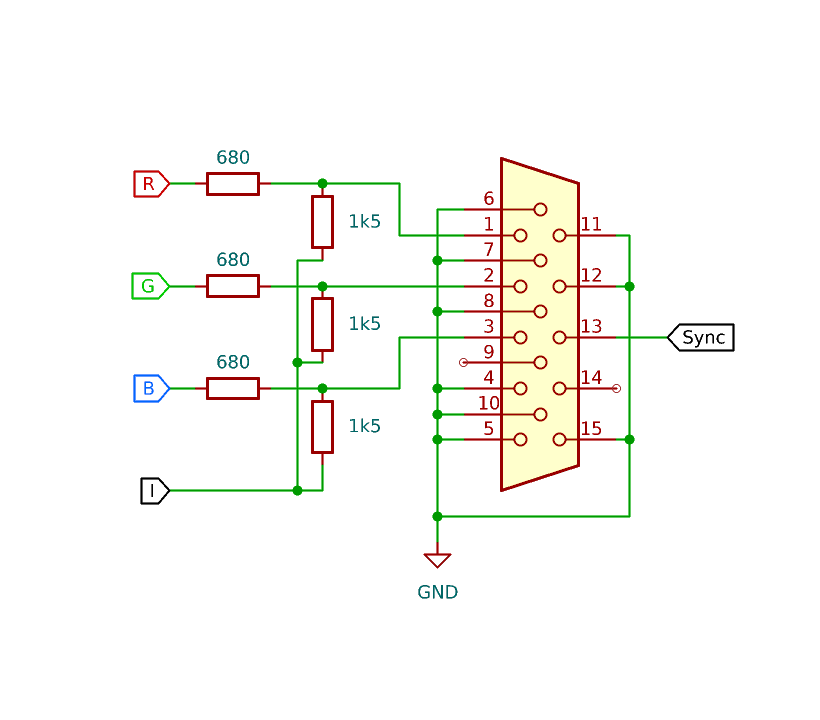
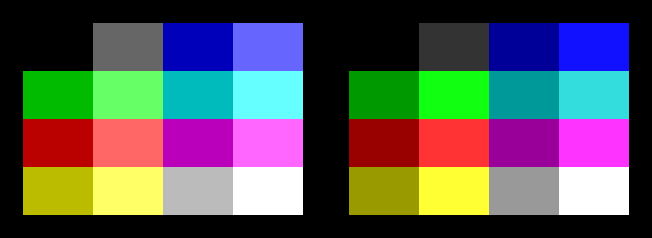

Introduction
This project was heavily inspired by (and mildly based on) the original TVout library for the Arduino, and aims to provide a simple library and firmware for generating color video output using AVR microcontrollers.
Visit the GitHub repository for the latest version: https://github.com/dj-pixus/avrgbi
It can be built and flashed using the official Arduino IDE.
For bug reports and suggestions, please use GitHub's issue tracker.
Supported boards
Currently only the Arduino UNO with the 328P chip is supported, but more devices may be added in the future. Contributions are always welcome.
Because of the stoopid way pins are mapped on newer boards, we need a different config for every single device in order to find a port with the lower 4 bits all wired out, while at the same time not conflicting with the h/w timer output. Make sure you have the correct board selected when uploading.
| R | G | B | I | Sync | Mode switch | |
|---|---|---|---|---|---|---|
| UNO (ATMega328P) | A3 (PC3) | A2 (PC2) | A1 (PC1) | A0 (PC0) | 9 (PB1) | 8 (PB0) |
How on earth does it work
The synchronisation signal is generated using the builtin timer/counter of the ATMega chip, which also controls the timing of the video output by interrupts. This way the rest of the program can safely run in the blanking intervals without interfering with the signal timing.
The picture data is stored in the memory as a series of bytes, where each byte stores the color values for 2 pixels, as shown on the figure below:

The reason for RGBI color format is that 4-bit color is nice to work with on an 8-bit processor. You can imagine this as if all three color channels had 2 bits, except the lower bits are tied together into that one I (intensity?) bit. This gives us a total of 16 possible colors.
After a cold boot, the screen will show the garbage that happens to be in memory, mostly determined by manufacturing imperfections, cosmic radiation, and the number of femboy foxes in your area. This is normal behavior, and you can get rid of it by doing an initialization command as described at the bottom. Of the page.
If you want to know more about the way this whole thing is implemented, go study the code. ;)
Supported modes
Video modes are defined in header files contained in the modes folder. This means that the firmware has to be built with one specific mode selected at the top of avrgbi-videogen.h, and it can NOT be changed without re-flashing.
Currently the following modes are available:
- NTSC (720x480@30i), 68x48 4bpp
- VGA (640x480@60p), 44x77 anamorphic 4bpp
Connecting the hardware
 |  |
| Scart connection | VGA (D-Sub) connection |
{kind=link}
Sync signal
In the case of Scart, our composite sync signal goes to pin 19, where normally composite video goes. Please note that the sync signal in a Scart connector has separate input and output pins with crossover wiring in the cable. This diagram shows a female connector that generously offers the signal on its output pin. If you decide to cut a cable with a male plug (no clue why would anyone do that), make sure to use pin 20 instead to fire right into the TV's input.
For the Scart connection, the signal level has to be reduced to around 0.3 volts. This is done by putting a 1.2k resistor in series, forming a voltage divider with the 75 ohms of the TV's input.
VGA uses TTL levels for the sync signal, so we can connect it directly to the Arduino's output. We could use separate pins for the H and V sync signals, but as more or less every monitor supports composite sync and there is no other option in the case of Scart anyway, no need to make things more complicated.
RGB signals
The weird way of wiring the color signals is because the Arduino outputs a 4-bit digital signal that we need to mix down to 3 analog channels somehow. Using the shown resistor values, each channel's own color bit weights roughly twice as much as the I bit, making a kinda-sorta linear palette of colors, while also reducing the voltage to a kinda-sorta correct level. Kinda-sorta. Having both the color bit and the I bit switched to 5 volts, the two resistors go parallel and become around 468 ohms, forming a nice voltage divider with the receiving device, reducing the voltage to around 0.69 V ( ͡° ͜ʖ ͡°), which is a comfortable maximum according to the specs. You can tweak the color palette by tweaking the resistor values if you wish.
Further magic
Pin 16 of the Scart connector is the so-called blanking signal that tells the TV when to switch to RGB input. This is like a 1-bit alpha channel and is usually used by CRT boxes to overlay teletext and other things on top of a composite video source (the TV programme for example). The voltage threshold can vary, but it should be somewhere between 1 and 3 volts when enabled. As we always want pure RGB input, we can tie it up to 5 V through 220 ohms to set it to a friendly 1.27 V level. If your Arduino has a 3.3 V pin, you can use that too, changing the resistor value accordingly. Please note that in many non-computerized TV sets this will override the builtin OSD too, causing it not to display at all. The saturation setting might also not have any effect in this mode for obvious reasons. This is normal behavior and you didn't break your TV (yet).
Pin 8 is a switching signal that tells the TV that we want to use the Scart input. Connecting it is only required if your TV doesn't offer an option to switch to it manually. Using this pin you can say to the TV something like "could u pls switch to this input right here thx". Some compassionate tubes will even turn on from stand-by, just for you. Please note that as our circuit only has 5 volts of juice, this signal will also make some TVs switch to 16:9 aspect ratio. If your TV requires this signal to be present and also supports 16:9 mode, you will need to steal 9-12 volts from somewhere else to make it look right.
VGA monitors don't even need this much pleading, they just accept RGB input by nature, and come to life automagically when the sync signal is present. Monitors are really kind-hearted objects. Love and respect your monitor.
There are two kinds of TVs in this world
The picture above shows two possible sets of colors, and which one you will get depends on the way your TV handles signal levels. As a traditional composite video signal carries the brightness information and the sync signal on the same wire (for the sake of simplicity, colors don't exist now), the smort engineers chose to lift the black level up from the ground to make room for the sync pulses to go even lower. This means that in a standard analog TV signal the visible brightness range goes from 0.3 V to 1 V, and it is true even for the RGB input. The problem is that the black level of our circuit is exaclty 0 V. Now, the standard also says that a TV should calibrate its black level based on the signal level during the "back porch", which happens in each line and is the time interval between the horizontal sync pulse and the left edge of the actual picture. (This is why you get a black screen if you tie the video signal to a fixed voltage.) Some TV sets can do this correctly and display the palette shown on the left. But some TVs are just unable to "hear" below a certain voltage, and on those the low signals get buried, giving a palette similar to the one on the right. This inconsistency could probably be fixed by pulling all three signals up by 0.3 volts using some appropriate resistors, but I wanted to keep the circuit simple.
Serial protocol specification
Commands can be sent to the device using the serial interface at 115200 Baud, with no handshake signals, 8 data bits, without parity bit, and one stop bit. A command is made up of a one-byte command identifier followed by zero or more parameters. A command is executed after receiving the required number of bytes with no time limit.
When using the C parameter for specifying color, the lower 4 bits of the byte are used for specifying a 4-bit color value, and the upper 4 bits have no importance currently.
0 - C | Initialize/fill screen with color C. |
1 - X - Y - C | Set pixel at X and Y coordinates to color C. |
2 - Y - X0 - X1 - C | Draw a row of pixels of color C in line Y, from X0 to X1. |
3 - X - Y0 - Y1 - C | Draw a column of pixels of color C in column X, from Y0 to Y1. |
4 - X0 - Y0 - X1 - Y1 - C | Draw a filled rectangle of color C with X0, Y0, X1 and Y1 specifying two opposite corners. |
5 - XBYTE - Y - WBYTE - H - ... | Display a rectangular bitmap described by the data following this command, starting at row Y. Due to the way pixel data is stored in memory, the horizontal offset must be even, and is going to be XBYTE * 2. The data is drawn in horizontal lines with a width of WBYTE * 2. H specifies the height of the bitmap. The command returns after XBYTE * H bytes of data has been received. |
Debug mode
To enter debug mode, reset or power cycle the device while theMode switch pin is pulled to ground. When debug mode is active, the following things will happen:
- Screen is initialized with a test pattern that can be used to check the color set and picture geometry.
- Received command parameters are echoed back after execution.
- Drawing is slowed down to a visually inspectable speed so you can see what is going on. Please note that commands are executed sequentially, so sending too much data at once can make the serial buffer overflow, causing unexpected behaviors.
- The command byte gets modulo'd by the number of available commands. The idea behind this is to let you do simple stress tests using a random stream of data.